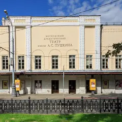
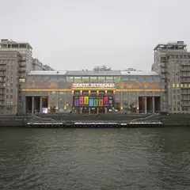
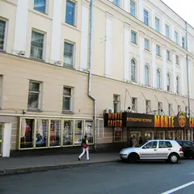
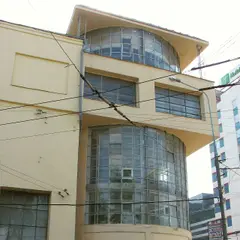
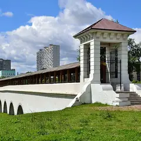
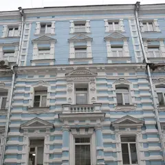
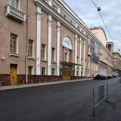
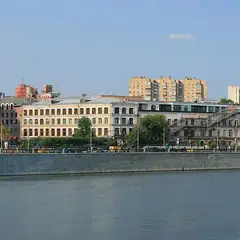
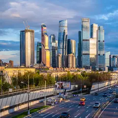

Подборку собрали 15 ноября, прошедшие события скрыты. Свежая афиша — на главной
Афиша на воскресенье, 15 ноября
Куда сходить сегодня в Москве
Воскресенье, 15 ноября. Сегодня в нашей афише 30 событий, среди них 14 выставок, 9 спектаклей и 4 вечера стендапа. Если не хочется покупать билеты, у нас 286 готовых планов на вечер: место, ужин рядом и маршрут.
- сегодня: 30 событий
- 286 планов
Сегодня, 15 ноября 30

Театр Пушкина, Филиал · м. Тверская · 18+
Шекспир в жанре кабаре от Никиты Пирожкова: музыка, пластика и пророчества ведьм за 1 ч 20 мин. Камерный зал Филиала в Сытинском переулке.
Подробнее: Макбет. КабареПозвать сюда: Макбет. КабареБилеты : Макбет. Кабаре (страница с билетами, откроется в новой вкладке)
Фото: A.Savin, FAL · Wikimedia Commons
РАМТ, Большая сцена · м. Охотный ряд · 18+
Роман Дэниела Киза в постановке Юрия Грымова: эксперимент превращает простодушного Чарли в гения и заставляет спросить, что важнее ума.
Подробнее: Цветы для ЭлджернонаПозвать сюда: Цветы для ЭлджернонаБилеты : Цветы для Элджернона (страница с билетами, откроется в новой вкладке)
VK Stadium · м. Сокол · 4 000–16 500 ₽ · 16+
Танцевальный концерт «Заточки»: хиты, новые песни, общий хор и танцпол на весь VK Stadium. Хороший вариант для шумной компании.
Подробнее: ЗаточкаПозвать сюда: ЗаточкаБилеты : Заточка (страница с билетами, откроется в новой вкладке)
STILL, Большой зал · м. Чистые пруды · от 2 500 ₽ · 18+
Формат без ведущего: на сцену по очереди выходят пять хедлайнеров, и лайнап каждый раз другой. Сеансы в 16:00, 19:00 или 21:30 — смотри по дате.
Подробнее: 5 хедлайнеров за 2500₽Позвать сюда: 5 хедлайнеров за 2500₽Билеты : 5 хедлайнеров за 2500₽ (страница с билетами, откроется в новой вкладке)
Гастротеатр «Калейдоскоп» · м. Охотный ряд · 18 000–25 000 ₽ · 12+
Гастрошоу у Манежной: два часа путешествия от пирамид Гизы до садов Семирамиды, к каждому чуду — свой сет. Вариант для особого свидания.
Подробнее: 7 чудес светаПозвать сюда: 7 чудес светаБилеты : 7 чудес света (страница с билетами, откроется в новой вкладке)
Фото: A.Savin, CC BY-SA 3.0 · Wikimedia Commons
SVET · м. Китай-город · от 25 000 ₽ · 6+
Ужин-спектакль режиссёра Алексея Франдетти и шефа Станислава Песоцкого: семь подач, живой вокал и проекции на 360°. Дорогой, но памятный вечер.
Подробнее: Атлантида. Тайна шести мировПозвать сюда: Атлантида. Тайна шести мировБилеты : Атлантида. Тайна шести миров (страница с билетами, откроется в новой вкладке)
Фото здания: Роман Балабин, CC BY-SA 3.0 · Wikimedia Commons
Стендап клуб на Трубной, Большой зал · м. Трубная · 950–1 500 ₽ · 18+
Фирменный вечер клуба: опытные комики с обкатанным материалом. Показы почти каждый день, по пятницам и субботам — в 19:00 и 21:00.
Подробнее: Биг стендапПозвать сюда: Биг стендапБилеты : Биг стендап (страница с билетами, откроется в новой вкладке)
Музей «Гараж», −1 этаж · м. Октябрьская · бесплатно · 12+
Инсталляция-диалог: две лампы общаются вспышками и звуком, а розовая зеркальная комната множит тебя до бесконечности. Вход бесплатный, фото выходят эффектные.
Подробнее: Вадим Фишкин «Словарь воображаемых мест»Позвать сюда: Вадим Фишкин «Словарь воображаемых мест»Билеты : Вадим Фишкин «Словарь воображаемых мест» (страница с билетами, откроется в новой вкладке)
Фото: Garage Museum of Contemporary Art, CC BY-SA 4.0 · Wikimedia Commons

Театр эстрады · м. Кропоткинская · 1 800–20 000 ₽ · 16+
Мюзикл Михаила Миронова на песнях Александра Розенбаума — история длиною в жизнь. Играют почти каждый день до 29 ноября, в выходные дважды.
Подробнее: Вальс-бостонПозвать сюда: Вальс-бостонБилеты : Вальс-бостон (страница с билетами, откроется в новой вкладке)
Фото: ATI1999, CC BY-SA 4.0 · Wikimedia Commons
Музей «Гараж», мезонин · м. Октябрьская · бесплатно · 12+
Можно поиграть в искусство: две 8-битные игры-инсталляции индийской художницы по мотивам советских детских книг. Бесплатно, а рядом Парк Горького.
Подробнее: Видеоигры Афры ШафикПозвать сюда: Видеоигры Афры ШафикБилеты : Видеоигры Афры Шафик (страница с билетами, откроется в новой вкладке)
Фото: Garage Museum of Contemporary Art, CC BY-SA 4.0 · Wikimedia Commons
МДМ (Московский дворец молодёжи), Большой зал · м. Фрунзенская · от 1 100 ₽ · 12+
Музыкальная комедия на хитах Челентано и итальянской эстрады — лёгкая, как старые кинокомедии. По выходным есть дневные показы.
Подробнее: Всё будет Челентано!Позвать сюда: Всё будет Челентано!Билеты : Всё будет Челентано! (страница с билетами, откроется в новой вкладке)
ГМИИ им. А. С. Пушкина, Галерея искусства стран Европы и Америки, зал 16 · м. Кропоткинская
Камерная выставка о французском коллекционере Гюставе Файе, поклоннике Гогена, и его связях с русскими собирателями. Один зал — на час; по понедельникам закрыто.
Подробнее: Гюстав Файе и русские коллекционерыПозвать сюда: Гюстав Файе и русские коллекционерыБилеты : Гюстав Файе и русские коллекционеры (страница с билетами, откроется в новой вкладке)
Фото: Ghirlandajo, CC BY-SA 3.0 · Wikimedia Commons
Манеж · м. Охотный ряд · 680–1 300 ₽ · 0+
Больше 400 снимков дикой природы со всего мира, зал о природе Москвы и макрозона с грибами. Неспешная красивая прогулка в центре, ежедневно 10–21.
Подробнее: Золотая Черепаха. XX Международный фестиваль дикой природыПозвать сюда: Золотая Черепаха. XX Международный фестиваль дикой природыБилеты : Золотая Черепаха. XX Международный фестиваль дикой природы (страница с билетами, откроется в новой вкладке)
Фото: Сергей Секачёв, CC BY-SA 3.0 · Wikimedia Commons
Музей «Гараж», открытое хранение · м. Октябрьская · 12+
Позднесоветские «долгие 80-е»: искусство вместе с телевизором, кино и рок-клубами той поры. Ностальгия для компании; учти, что в залах бывает мигающий свет.
Подробнее: Искусство на частоте 1980-хПозвать сюда: Искусство на частоте 1980-хБилеты : Искусство на частоте 1980-х (страница с билетами, откроется в новой вкладке)
Фото: Garage Museum of Contemporary Art, CC BY-SA 4.0 · Wikimedia Commons
ВДНХ, павильон № 1 «Центральный» · м. ВДНХ · 0+
Около 200 работ о том, как театр и живопись говорят одним языком: Репин, Брюллов, Суриков, Кустодиев и сценические костюмы. Центральный павильон ВДНХ.
Подробнее: Искусство сцены. Академическая живописьПозвать сюда: Искусство сцены. Академическая живописьБилеты : Искусство сцены. Академическая живопись (страница с билетами, откроется в новой вкладке)
Фото: Alexxx1979, CC BY-SA 4.0 · Wikimedia Commons
ГМИИ им. А. С. Пушкина, Галерея искусства стран Европы и Америки · м. Кропоткинская
Кубинские киноафиши и плакаты 1950–70-х — больше 140 листов дерзкой графики. Зайдёт и тем, кто к музеям обычно равнодушен. По понедельникам закрыто.
Подробнее: Кубинский плакат. 1950–1970-е. Кино и революцияПозвать сюда: Кубинский плакат. 1950–1970-е. Кино и революцияБилеты : Кубинский плакат. 1950–1970-е. Кино и революция (страница с билетами, откроется в новой вкладке)
Фото: Ghirlandajo, CC BY-SA 3.0 · Wikimedia Commons
Театр Вахтангова · м. Смоленская · от 1 500 ₽ · 16+
Озорная оперетта о скромной воспитаннице, которую тянет за кулисы: музыка, танцы и путаница. 31 декабря играют в 17:00.
Подробнее: Мадемуазель НитушПозвать сюда: Мадемуазель НитушБилеты : Мадемуазель Нитуш (страница с билетами, откроется в новой вкладке)
Фото: A.Savin, Free Art License · Wikimedia Commons

Московский театр оперетты · м. Охотный ряд · 1 000–9 100 ₽ · 12+
Самый известный российский мюзикл о мести графа по Дюма возвращается блоками: 10–15 ноября и 8–13 декабря. В выходные идёт дважды, в 14:00 и 19:00.
Подробнее: Монте-КристоПозвать сюда: Монте-КристоБилеты : Монте-Кристо (страница с билетами, откроется в новой вкладке)
Фото: Vladimir OKC, CC BY-SA 3.0 · Wikimedia Commons
ГЭС-2, галереи С2–С5 · м. Кропоткинская · 12+
Натюрморт, портрет и пейзаж глазами современных художников — сотня работ, десятки авторов. Бесплатный вход — каждую первую среду месяца.
Подробнее: Натюрморт. Портрет. Пейзаж. После жанраПозвать сюда: Натюрморт. Портрет. Пейзаж. После жанраБилеты : Натюрморт. Портрет. Пейзаж. После жанра (страница с билетами, откроется в новой вкладке)
Фото: Юрий Д.К., CC BY 4.0 · Wikimedia Commons
Музей Востока на ВДНХ (павильон № 13) · м. ВДНХ · 0+
Около 250 работ Рериха — от древнерусских мотивов до гималайской серии — плюс тибетские танки и буддийская бронза. Большая выставка в павильоне ВДНХ.
Подробнее: Николай Рерих. Ковчег будущегоПозвать сюда: Николай Рерих. Ковчег будущегоБилеты : Николай Рерих. Ковчег будущего (страница с билетами, откроется в новой вкладке)
Фото: Alexxx1979, CC BY-SA 4.0 · Wikimedia Commons
ЦСИ AZ/ART · м. Китай-город · 0+
Скульптура оттепели в 43 работах: Эрнст Неизвестный, группа ЛЕСС и их современники — и бунтари, и официальные мастера. Небольшая выставка на Маросейке.
Подробнее: Они были разными. Скульптура оттепелиПозвать сюда: Они были разными. Скульптура оттепелиБилеты : Они были разными. Скульптура оттепели (страница с билетами, откроется в новой вкладке)
Иммерсивный театр «Морфеус» · м. Павелецкая · 3 900–4 900 ₽ · 16+
Иммерсивная комедия с закрытыми глазами: семь зрителей попадают в Москву 1903 года с театральными интригами и кафе. Полтора часа, несколько сеансов в день.
Подробнее: Поезд, Чехов, два орлаПозвать сюда: Поезд, Чехов, два орлаБилеты : Поезд, Чехов, два орла (страница с билетами, откроется в новой вкладке)
Центр «Марс» · м. Сухаревская · 0+
Пять залов-стихий — Огонь, Вода, Воздух, Земля и Эфир, — где ты сам часть работы, а нейроинтерфейс превращает концентрацию в рисунок. Есть вспышки и громкий звук.
Подробнее: Сенс. Эволюция стихийПозвать сюда: Сенс. Эволюция стихийБилеты : Сенс. Эволюция стихий (страница с билетами, откроется в новой вкладке)
STILL, Большой зал · м. Чистые пруды · от 1 080 ₽ · 18+
Вечер в двух актах: сначала живой джаз, затем стендап от трёх комиков, каждый раз в новом составе. В пятницу начинают в 21:30, в другие дни — в 18:30.
Подробнее: Стендап + джаз: два концерта в один вечерПозвать сюда: Стендап + джаз: два концерта в один вечерБилеты : Стендап + джаз: два концерта в один вечер (страница с билетами, откроется в новой вкладке)
ГМИИ им. А. С. Пушкина, Главное здание, зал 31 · м. Кропоткинская
Видеоинсталляция итальянского классика медиаискусства о воде в зале главного здания. Медитативная пауза перед прогулкой; в понедельник музей закрыт.
Подробнее: Фабрицио Плесси. Вертикальные моряПозвать сюда: Фабрицио Плесси. Вертикальные моряБилеты : Фабрицио Плесси. Вертикальные моря (страница с билетами, откроется в новой вкладке)
Фото: Ghirlandajo, CC BY-SA 3.0 · Wikimedia Commons
Центральный детский мир · м. Кузнецкий Мост · бесплатно
Бесплатный научный праздник в ЦДМ: опыты, робототехника, мастер-классы и концерты. Подойдёт, чтобы зайти компанией или с детьми.
Подробнее: Фестиваль изобретенийПозвать сюда: Фестиваль изобретенийБилеты : Фестиваль изобретений (страница с билетами, откроется в новой вкладке)
Фото: AlixSaz, CC BY-SA 4.0 · Wikimedia Commons
Мультимедиа Арт Музей (МАММ) · м. Кропоткинская · от 100 ₽ · 16+
Фотобиеннале занимает весь МАММ: Роджер Баллен, коллажи Родченко, история метро и многое другое. Билет от 100 ₽, по понедельникам закрыто.
Подробнее: Фотобиеннале-2026Позвать сюда: Фотобиеннале-2026Билеты : Фотобиеннале-2026 (страница с билетами, откроется в новой вкладке)
Фото: JukoFF, CC BY-SA 4.0 · Wikimedia Commons
StandUp Cafe, Большой зал · м. Чистые пруды · от 2 500 ₽ · 18+
Хетаг Хугаев строит шутки на каламбурах и внезапных поворотах в историях. Сольник около 90 минут; старт в 19:00 или 21:30 — зависит от дня.
Подробнее: Хетаг Хугаев. Сольный концертПозвать сюда: Хетаг Хугаев. Сольный концертБилеты : Хетаг Хугаев. Сольный концерт (страница с билетами, откроется в новой вкладке)
Центр «Зотов» · м. Улица 1905 года · 6+
Выставка о хлебе и эпохе 1917–1939 годов: Кустодиев, Петров-Водкин, Родченко и залы, где пахнет выпечкой. Детям до 13 лет включительно — бесплатно. В понедельник закрыто.
Подробнее: ХлебПозвать сюда: ХлебБилеты : Хлеб (страница с билетами, откроется в новой вкладке)
Фото: MBH, CC BY 4.0 · Wikimedia Commons
Gipsy · м. Полянка · 2 500–4 850 ₽ · 18+
Велотренировка как рейв: у каждого заезда свой саундтрек — хаус, техно, драм-н-бейс или хард-техно. Заезды с 11:00 до 19:00, вариант для активных подруг.
Подробнее: MCF (Music Cycle Festival)Позвать сюда: MCF (Music Cycle Festival)Билеты : MCF (Music Cycle Festival) (страница с билетами, откроется в новой вкладке)


Планы на вечер без билетов 12 из 286
- Здание Центросоюза · Модернизм Ле Корбюзье · м. Сретенский бульвар
- 2 минуты пешкомKeep · Гастробар
Единственное здание Корбюзье в России — розовый туф и стекло, а потом ужин при свечах в Keep через дорогу.
Открыть план: Ле Корбюзье на МясницкойПозвать сюда: Ле Корбюзье на Мясницкой
Фото: Ludvig14, CC BY-SA 4.0 · Wikimedia Commons

- Клуб имени Зуева · Конструктивизм · м. Белорусская
- 9 минут пешкомКультурный код · Кафе
Конструктивизм Голосова: вечером стеклянная лестница светится изнутри. Перед этим — кофе в «Культурном коде» на Чаянова.
Открыть план: Стеклянный цилиндр клуба ЗуеваПозвать сюда: Стеклянный цилиндр клуба Зуева
Фото: Guldfisken, CC BY-SA 3.0 · Wikimedia Commons

- Ростокинский акведук · Акведук XVIII века · м. ВДНХ
- 12 минут пешкомИнкубо · Квест с актёрами
В сумерках пройти вдоль каменного Ростокинского акведука 1780-х, а потом хоррор в «Инкубо» — «Пожиратель душ» или неоновая «Ночь в Токио» с сильными актёрами.
Открыть план: Акведук в сумерках и хоррор-квестПозвать сюда: Акведук в сумерках и хоррор-квест
Фото: Dmitry Ivanov., CC BY-SA 4.0 · Wikimedia Commons
- Арбат · Пешеходная улица · м. Смоленская
- 14 минут пешкомСахалин · Ресторан высокой кухни
Прогулка по Арбату и ужин с панорамой на верхнем этаже отеля на Смоленской.
Открыть план: Арбат и морепродукты сверхуПозвать сюда: Арбат и морепродукты сверху
Фото: Alex 'Florstein' Fedorov, CC BY-SA 4.0 · Wikimedia Commons
- Арбат · Пешеходная улица · м. Смоленская
- 12 минут пешкомWhite Rabbit · Панорамный ресторан
Неспешно по Арбату мимо уличных музыкантов и Стены Цоя, а потом ужин под стеклянным куполом со звездой Michelin и видом на центр.
Открыть план: Арбат и ужин под куполомПозвать сюда: Арбат и ужин под куполом
Фото: Alex 'Florstein' Fedorov, CC BY-SA 4.0 · Wikimedia Commons

- Draw Up Studio · Арт-вечеринка · м. Китай-город
- 10 минут пешкомNouge · Винное бистро
Пишете картины, а потом идёте пить вино в старинную усадьбу.
Открыть план: Арт-вечеринка и бистроПозвать сюда: Арт-вечеринка и бистро
Фото здания: Александр Сигачёв, CC BY-SA 4.0 · Wikimedia Commons

- Музтеатр Станиславского · Театр оперы и балета · м. Чеховская
- 3 минуты пешкомTwins Garden · Ресторан высокой кухни
Опера или балет на Большой Дмитровке, а потом ужин в Twins Garden: две звезды Michelin, фермерские продукты и вид на центр с седьмого этажа.
Открыть план: Балет и две звездыПозвать сюда: Балет и две звезды
Фото: NVO, CC BY-SA 3.0 · Wikimedia Commons

- Краснопресненские бани · Баня и хамам · м. Улица 1905 года
- 13 минут пешкомРаковарня · Раки и караоке
Финская сауна, хамам и бассейн в Краснопресненских банях, а потом через Трёхгорку в «Раковарню» — раки, морепродукты и караоке до шести утра.
Открыть план: Баня на Пресне и ракиПозвать сюда: Баня на Пресне и раки
Фото: Ludvig14, CC BY-SA 4.0 · Wikimedia Commons
- Хлебозавод №9 · Креативный квартал · м. Дмитровская
- 6 минут пешкомФлакон · Дизайн-завод
Два креативных квартала рядом: еда, бары и маркеты, можно переходить из одного в другой.
Открыть план: Бары Хлебозавода и ФлаконаПозвать сюда: Бары Хлебозавода и Флакона
Фото: Bezik, CC BY-SA 4.0 · Wikimedia Commons

- Смотровая iCITY · Бесплатная смотровая и коворкинг · м. Шелепиха
- 18 минут пешкомBamboo.Bar · Ресторан с террасой
Встретить закат на бесплатной круговой смотровой iCITY, а потом спуститься в квартал на террасу Bamboo.Bar с зеленью и фонтанами — удобно прямо после работы.
Открыть план: Бесплатная смотровая и терраса в СитиПозвать сюда: Бесплатная смотровая и терраса в Сити
Фото: kishjar?, CC BY 2.0 · Wikimedia Commons
- Парк Горького · Парк · м. Октябрьская
- 11 минут пешкомSUBSTANCE · Бильярд-бистро
Прогулка по набережной и пара партий в бильярд-бистро SUBSTANCE.
Открыть план: Бильярд в Парке ГорькогоПозвать сюда: Бильярд в Парке Горького
Фото: A.Savin, Free Art License · Wikimedia Commons
- Большой театр · Театр · м. Охотный ряд
- 5 минут пешкомСавва · Ресторан высокой кухни
Спектакль на главной сцене страны, а после ужин в «Савве» в «Метрополе»: современная русская кухня Андрея Шмакова в пяти минутах пешком.
Открыть план: Большой и «Савва»Позвать сюда: Большой и «Савва»
Фото: Юрий Д.К., CC BY 4.0 · Wikimedia Commons


Как позвать
- Выбери план, место или событие — в карточке адрес, цены и маршрут в Яндекс Картах.
- Нажми «Позвать сюда» — соберётся приглашение-игра для свидания или голосование для компании.
- Отправь ссылку в любой мессенджер: тебе ответят, а компания отметит, куда и когда может. Бесплатно и без регистрации.